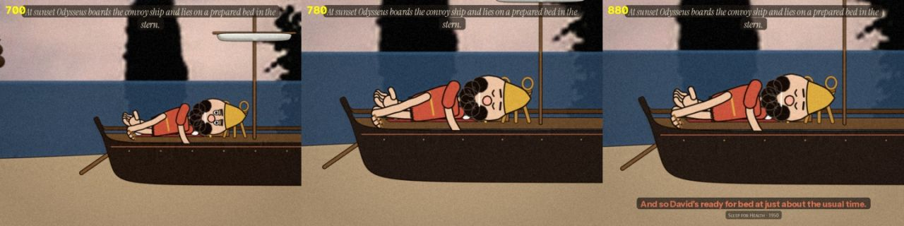
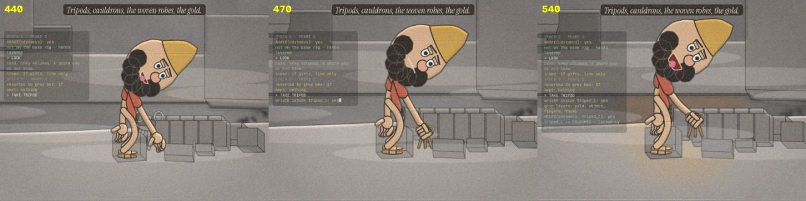
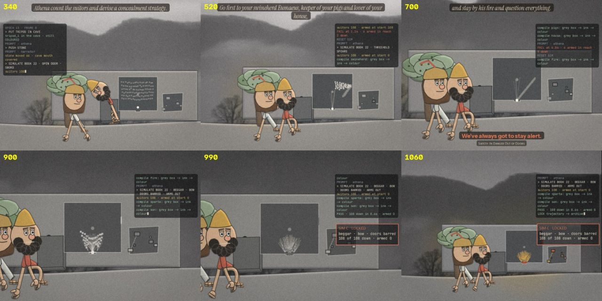
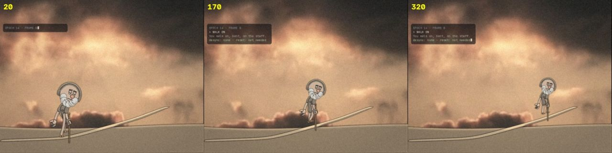
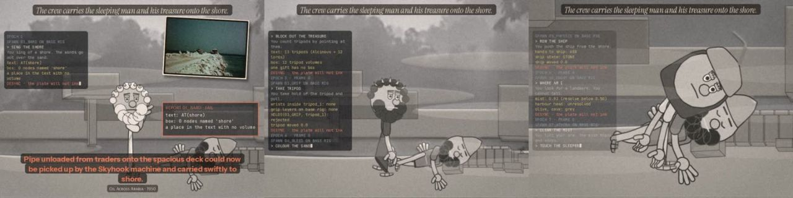

Case 17 of 18 · The Found Odyssey
Episode 7 · THE LOOP
Can the build of a world be shown inside the film, and checked?
Episode 7, THE LOOP: Book 13, 6:48. Ithaca is a grey-box blockout and an interactive-fiction log, and a plate only inks when the two agree.
How it was made
- Make every gift, the ship, the olive and the cave real 3D boxes in the rig's world coordinates.
- Write a log of commands and checks beside the frame.
- A node turns to colour only when a hand holds it (the Episode 6 grip latch); otherwise it resets to grey box.
What this case teaches
- Every number in the log comes from code reading the rig's joints and the boxes, so the on-screen check is real.
- Seven agents loop the same line seven times; each fails a different check until one locks.
- The production method (blockout, check, ink) is the plot.
How it differs. Episode 6 fixed the grip. Episode 7 uses the grip as the test that lets the world exist.
First sheet and last sheet
Where the stage started and where it finished.


The sheets, step by step
Grouped by working session. Click any sheet to view it full size; use the arrow keys to move through them.
Step 1Scene test and Test framesOct 19 12:40–13:25 · 11 sheets



Show 7 more from this step







Step 2EpisodeOct 19 15:51 · 1 sheet
What came out of it


Read the record
Carried forward
The checking method moves to a new character built from photographs.